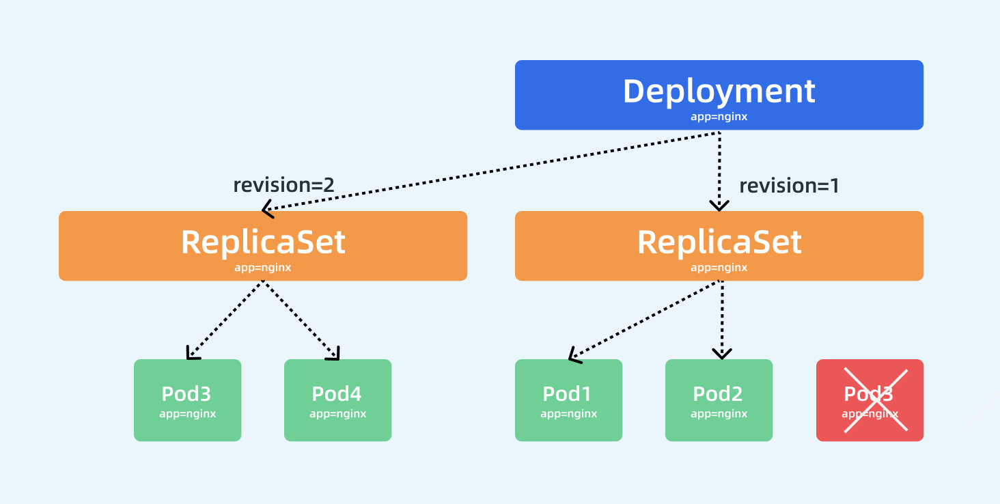

Deployment 控制器¶
前面我们学习了 ReplicaSet 控制器，了解到该控制器是用来维护集群中运行的 Pod 数量的，但是往往在实际操作的时候，我们反而不会去直接使用 RS，而是会使用更上层的控制器，比如我们今天要学习的主角 Deployment，Deployment 一个非常重要的功能就是实现了 Pod 的“水平扩展/收缩”，比如我们应用更新了，我们只需要更新我们的容器镜像，然后修改 Deployment 里面的 Pod 模板镜像，那么 Deployment 就会用滚动更新（Rolling Update）的方式来升级现在的 Pod，这个能力是非常重要的，因为对于线上的服务我们需要做到不中断服务，所以滚动更新就成了必须的一个功能。而 Deployment 这个能力的实现，依赖的就是上节课我们学习的 ReplicaSet 这个资源对象，实际上我们可以通俗的理解就是每个 Deployment 就对应集群中的一次部署，这样就更好理解了。
Deployment¶
Deployment 资源对象的格式和 ReplicaSet 几乎一致，如下资源对象就是一个常见的 Deployment 资源类型：（nginx-deploy.yaml）
apiVersion: apps/v1
kind: Deployment
metadata:
name: nginx-deploy
namespace: default
spec:
replicas: 3 # 期望的 Pod 副本数量，默认值为1
selector: # Label Selector，必须匹配 Pod 模板中的标签
matchLabels:
app: nginx
template: # Pod 模板
metadata:
labels:
app: nginx
spec:
containers:
- name: nginx
image: nginx
ports:
- containerPort: 80我们这里只是将类型替换成了 Deployment，我们可以先来创建下这个资源对象：
$ kubectl apply -f nginx-deploy.yaml
deployment.apps/nginx-deploy created
$ kubectl get deployment
NAME READY UP-TO-DATE AVAILABLE AGE
nginx-deploy 3/3 3 3 58s创建完成后，查看 Pod 状态：
$ kubectl get pods -l app=nginx
NAME READY STATUS RESTARTS AGE
nginx-deploy-85ff79dd56-7r76h 1/1 Running 0 41s
nginx-deploy-85ff79dd56-d5gjs 1/1 Running 0 41s
nginx-deploy-85ff79dd56-txc4h 1/1 Running 0 41s到这里我们发现和之前的 RS 对象是否没有什么两样，都是根据spec.replicas来维持的副本数量，我们随意查看一个 Pod 的描述信息：
$ kubectl describe pod nginx-deploy-85ff79dd56-txc4h
Name: nginx-deploy-85ff79dd56-txc4h
Namespace: default
Priority: 0
PriorityClassName: <none>
Node: ydzs-node1/10.151.30.22
Start Time: Sat, 16 Nov 2019 16:01:25 +0800
Labels: app=nginx
pod-template-hash=85ff79dd56
Annotations: podpreset.admission.kubernetes.io/podpreset-time-preset: 2062768
Status: Running
IP: 10.244.1.166
Controlled By: ReplicaSet/nginx-deploy-85ff79dd56
......
Events:
Type Reason Age From Message
---- ------ ---- ---- -------
Normal Scheduled <unknown> default-scheduler Successfully assigned default/nginx-deploy-85ff79dd56-txc4h to ydzs-node1
Normal Pulling 2m kubelet, ydzs-node1 Pulling image "nginx"
Normal Pulled 117s kubelet, ydzs-node1 Successfully pulled image "nginx"
Normal Created 117s kubelet, ydzs-node1 Created container nginx
Normal Started 116s kubelet, ydzs-node1 Started container nginx我们仔细查看其中有这样一个信息Controlled By: ReplicaSet/nginx-deploy-85ff79dd56，什么意思？是不是表示当前我们这个 Pod 的控制器是一个 ReplicaSet 对象啊，我们不是创建的一个 Deployment 吗？为什么 Pod 会被 RS 所控制呢？那我们再去看下这个对应的 RS 对象的详细信息如何呢：
$ kubectl describe rs nginx-deploy-85ff79dd56
Name: nginx-deploy-85ff79dd56
Namespace: default
Selector: app=nginx,pod-template-hash=85ff79dd56
Labels: app=nginx
pod-template-hash=85ff79dd56
Annotations: deployment.kubernetes.io/desired-replicas: 3
deployment.kubernetes.io/max-replicas: 4
deployment.kubernetes.io/revision: 1
Controlled By: Deployment/nginx-deploy
Replicas: 3 current / 3 desired
Pods Status: 3 Running / 0 Waiting / 0 Succeeded / 0 Failed
......
Events:
Type Reason Age From Message
---- ------ ---- ---- -------
Normal SuccessfulCreate 4m52s replicaset-controller Created pod: nginx-deploy-85ff79dd56-7r76h
Normal SuccessfulCreate 4m52s replicaset-controller Created pod: nginx-deploy-85ff79dd56-d5gjs
Normal SuccessfulCreate 4m52s replicaset-controller Created pod: nginx-deploy-85ff79dd56-txc4h其中有这样的一个信息：Controlled By: Deployment/nginx-deploy，明白了吧？意思就是我们的 Pod 依赖的控制器 RS 实际上被我们的 Deployment 控制着呢，我们可以用下图来说明 Pod、ReplicaSet、Deployment 三者之间的关系：
通过上图我们可以很清楚的看到，定义了3个副本的 Deployment 与 ReplicaSet 和 Pod 的关系，就是一层一层进行控制的。ReplicaSet 作用和之前一样还是来保证 Pod 的个数始终保存指定的数量，所以 Deployment 中的容器 restartPolicy=Always 是唯一的就是这个原因，因为容器必须始终保证自己处于 Running 状态，ReplicaSet 才可以去明确调整 Pod 的个数。而 Deployment 是通过管理 ReplicaSet 的数量和属性来实现水平扩展/收缩以及滚动更新两个功能的。
水平伸缩¶
水平扩展/收缩的功能比较简单，因为 ReplicaSet 就可以实现，所以 Deployment 控制器只需要去修改它缩控制的 ReplicaSet 的 Pod 副本数量就可以了。比如现在我们把 Pod 的副本调整到 4 个，那么 Deployment 所对应的 ReplicaSet 就会自动创建一个新的 Pod 出来，这样就水平扩展了，我们可以使用一个新的命令 kubectl scale 命令来完成这个操作：
$ kubectl scale deployment nginx-deploy --replicas=4
deployment.apps/nginx-deployment scaled扩展完成后可以查看当前的 RS 对象：
$ kubectl get rs
NAME DESIRED CURRENT READY AGE
nginx-deploy-85ff79dd56 4 4 3 40m可以看到期望的 Pod 数量已经变成 4 了，只是 Pod 还没准备完成，所以 READY 状态数量还是 3，同样查看 RS 的详细信息：
$ kubectl describe rs nginx-deploy-85ff79dd56
Name: nginx-deploy-85ff79dd56
Namespace: default
Selector: app=nginx,pod-template-hash=85ff79dd56
......
Events:
Type Reason Age From Message
---- ------ ---- ---- -------
Normal SuccessfulCreate 40m replicaset-controller Created pod: nginx-deploy-85ff79dd56-7r76h
Normal SuccessfulCreate 40m replicaset-controller Created pod: nginx-deploy-85ff79dd56-d5gjs
Normal SuccessfulCreate 40m replicaset-controller Created pod: nginx-deploy-85ff79dd56-txc4h
Normal SuccessfulCreate 17s replicaset-controller Created pod: nginx-deploy-85ff79dd56-tph9g可以看到 ReplicaSet 控制器增加了一个新的 Pod，同样的 Deployment 资源对象的事件中也可以看到完成了扩容的操作：
$ kubectl describe deploy nginx-deploy
Name: nginx-deploy
Namespace: default
......
OldReplicaSets: <none>
NewReplicaSet: nginx-deploy-85ff79dd56 (4/4 replicas created)
Events:
Type Reason Age From Message
---- ------ ---- ---- -------
Normal ScalingReplicaSet 43m deployment-controller Scaled up replica set nginx-deploy-85ff79dd56 to 3
Normal ScalingReplicaSet 3m16s deployment-controller Scaled up replica set nginx-deploy-85ff79dd56 to 4滚动更新¶
如果只是水平扩展/收缩这两个功能，就完全没必要设计 Deployment 这个资源对象了，Deployment 最突出的一个功能是支持滚动更新，比如现在我们需要把应用容器更改为 nginx:1.7.9 版本，修改后的资源清单文件如下所示：
apiVersion: apps/v1
kind: Deployment
metadata:
name: nginx-deploy
namespace: default
spec:
replicas: 3
selector:
matchLabels:
app: nginx
minReadySeconds: 5
strategy:
type: RollingUpdate # 指定更新策略：RollingUpdate和Recreate
rollingUpdate:
maxSurge: 1
maxUnavailable: 1
template:
metadata:
labels:
app: nginx
spec:
containers:
- name: nginx
image: nginx:1.7.9
ports:
- containerPort: 80后前面相比较，除了更改了镜像之外，我们还指定了更新策略：
minReadySeconds: 5
strategy:
type: RollingUpdate
rollingUpdate:
maxSurge: 1
maxUnavailable: 1minReadySeconds：表示 Kubernetes 在等待设置的时间后才进行升级，如果没有设置该值，Kubernetes 会假设该容器启动起来后就提供服务了，如果没有设置该值，在某些极端情况下可能会造成服务不正常运行，默认值就是0。type=RollingUpdate：表示设置更新策略为滚动更新，可以设置为Recreate和RollingUpdate两个值，Recreate表示全部重新创建，默认值就是RollingUpdate。maxSurge：表示升级过程中最多可以比原先设置多出的 Pod 数量，例如：maxSurage=1，replicas=5，就表示Kubernetes 会先启动一个新的 Pod，然后才删掉一个旧的 Pod，整个升级过程中最多会有5+1个 Pod。maxUnavaible：表示升级过程中最多有多少个 Pod 处于无法提供服务的状态，当maxSurge不为0时，该值也不能为0，例如：maxUnavaible=1，则表示 Kubernetes 整个升级过程中最多会有1个 Pod 处于无法服务的状态。
现在我们来直接更新上面的 Deployment 资源对象：
$ kubectl apply -f nginx-deploy.yaml record 参数
我们可以添加了一个额外的 --record 参数来记录下我们的每次操作所执行的命令，以方便后面查看。
更新后，我们可以执行下面的 kubectl rollout status 命令来查看我们此次滚动更新的状态：
$ kubectl rollout status deployment/nginx-deploy
Waiting for deployment "nginx-deploy" rollout to finish: 2 out of 3 new replicas have been updated...从上面的信息可以看出我们的滚动更新已经有两个 Pod 已经更新完成了，在滚动更新过程中，我们还可以执行如下的命令来暂停更新：
$ kubectl rollout pause deployment/nginx-deploy
deployment.apps/nginx-deploy paused这个时候我们的滚动更新就暂停了，此时我们可以查看下 Deployment 的详细信息：
$ kubectl describe deploy nginx-deploy
Name: nginx-deploy
Namespace: default
CreationTimestamp: Sat, 16 Nov 2019 16:01:24 +0800
Labels: <none>
Annotations: deployment.kubernetes.io/revision: 2
kubectl.kubernetes.io/last-applied-configuration:
{"apiVersion":"apps/v1","kind":"Deployment","metadata":{"annotations":{},"name":"nginx-deploy","namespace":"default"},"spec":{"minReadySec...
Selector: app=nginx
Replicas: 3 desired | 2 updated | 4 total | 4 available | 0 unavailable
StrategyType: RollingUpdate
MinReadySeconds: 5
RollingUpdateStrategy: 1 max unavailable, 1 max surge
......
OldReplicaSets: nginx-deploy-85ff79dd56 (2/2 replicas created)
NewReplicaSet: nginx-deploy-5b7b9ccb95 (2/2 replicas created)
Events:
Type Reason Age From Message
---- ------ ---- ---- -------
Normal ScalingReplicaSet 26m deployment-controller Scaled up replica set nginx-deploy-85ff79dd56 to 4
Normal ScalingReplicaSet 3m44s deployment-controller Scaled down replica set nginx-deploy-85ff79dd56 to 3
Normal ScalingReplicaSet 3m44s deployment-controller Scaled up replica set nginx-deploy-5b7b9ccb95 to 1
Normal ScalingReplicaSet 3m44s deployment-controller Scaled down replica set nginx-deploy-85ff79dd56 to 2
Normal ScalingReplicaSet 3m44s deployment-controller Scaled up replica set nginx-deploy-5b7b9ccb95 to 2
我们仔细观察 Events 事件区域的变化，上面我们用 kubectl scale 命令将 Pod 副本调整到了 4，现在我们更新的时候是不是声明又变成 3 了，所以 Deployment 控制器首先是将之前控制的 nginx-deploy-85ff79dd56 这个 RS 资源对象进行缩容操作，然后滚动更新开始了，可以发现 Deployment 为一个新的 nginx-deploy-5b7b9ccb95 RS 资源对象首先新建了一个新的 Pod，然后将之前的 RS 对象缩容到 2 了，再然后新的 RS 对象扩容到 2，后面由于我们暂停滚动升级了，所以没有后续的事件了，大家有看明白这个过程吧？这个过程就是滚动更新的过程，启动一个新的 Pod，杀掉一个旧的 Pod，然后再启动一个新的 Pod，这样滚动更新下去，直到全都变成新的 Pod，这个时候系统中应该存在 4 个 Pod，因为我们设置的策略maxSurge=1，所以在升级过程中是允许的，而且是两个新的 Pod，两个旧的 Pod：
$ kubectl get pods -l app=nginx
NAME READY STATUS RESTARTS AGE
nginx-deploy-5b7b9ccb95-k6pkh 1/1 Running 0 11m
nginx-deploy-5b7b9ccb95-l6lmx 1/1 Running 0 11m
nginx-deploy-85ff79dd56-7r76h 1/1 Running 0 75m
nginx-deploy-85ff79dd56-txc4h 1/1 Running 0 75m查看 Deployment 的状态也可以看到当前的 Pod 状态：
$ kubectl get deployment
NAME READY UP-TO-DATE AVAILABLE AGE
nginx-deploy 4/3 2 4 75m这个时候我们可以使用kubectl rollout resume来恢复我们的滚动更新：
$ kubectl rollout resume deployment/nginx-deploy
deployment.apps/nginx-deploy resumed
$ kubectl rollout status deployment/nginx-deploy
Waiting for deployment "nginx-deploy" rollout to finish: 2 of 3 updated replicas are available...
deployment "nginx-deploy" successfully rolled out看到上面的信息证明我们的滚动更新已经成功了，同样可以查看下资源状态：
$ kubectl get pod -l app=nginx
NAME READY STATUS RESTARTS AGE
nginx-deploy-5b7b9ccb95-gmq7v 1/1 Running 0 115s
nginx-deploy-5b7b9ccb95-k6pkh 1/1 Running 0 15m
nginx-deploy-5b7b9ccb95-l6lmx 1/1 Running 0 15m
$ kubectl get deployment
NAME READY UP-TO-DATE AVAILABLE AGE
nginx-deploy 3/3 3 3 79m这个时候我们查看 ReplicaSet 对象，可以发现会出现两个：
$ kubectl get rs -l app=nginx
NAME DESIRED CURRENT READY AGE
nginx-deploy-5b7b9ccb95 3 3 3 18m
nginx-deploy-85ff79dd56 0 0 0 81m从上面可以看出滚动更新之前我们使用的 RS 资源对象的 Pod 副本数已经变成 0 了，而滚动更新后的 RS 资源对象变成了 3 个副本，我们可以导出之前的 RS 对象查看：
$ kubectl get rs nginx-deploy-85ff79dd56 -o yaml
apiVersion: apps/v1
kind: ReplicaSet
metadata:
annotations:
deployment.kubernetes.io/desired-replicas: "3"
deployment.kubernetes.io/max-replicas: "4"
deployment.kubernetes.io/revision: "1"
creationTimestamp: "2019-11-16T08:01:24Z"
generation: 5
labels:
app: nginx
pod-template-hash: 85ff79dd56
name: nginx-deploy-85ff79dd56
namespace: default
ownerReferences:
- apiVersion: apps/v1
blockOwnerDeletion: true
controller: true
kind: Deployment
name: nginx-deploy
uid: b0fc5614-ef58-496c-9111-740353bd90d4
resourceVersion: "2140545"
selfLink: /apis/apps/v1/namespaces/default/replicasets/nginx-deploy-85ff79dd56
uid: 8eca2998-3610-4f80-9c21-5482ba579892
spec:
replicas: 0
selector:
matchLabels:
app: nginx
pod-template-hash: 85ff79dd56
template:
metadata:
creationTimestamp: null
labels:
app: nginx
pod-template-hash: 85ff79dd56
spec:
containers:
- image: nginx
imagePullPolicy: Always
name: nginx
ports:
- containerPort: 80
protocol: TCP
resources: {}
terminationMessagePath: /dev/termination-log
terminationMessagePolicy: File
dnsPolicy: ClusterFirst
restartPolicy: Always
schedulerName: default-scheduler
securityContext: {}
terminationGracePeriodSeconds: 30
status:
observedGeneration: 5
replicas: 0我们仔细观察这个资源对象里面的描述信息除了副本数变成了replicas=0之外，和更新之前没有什么区别吧？大家看到这里想到了什么？有了这个 RS 的记录存在，是不是我们就可以回滚了啊？而且还可以回滚到前面的任意一个版本，这个版本是如何定义的呢？我们可以通过命令 rollout history 来获取：
$ kubectl rollout history deployment nginx-deploy
deployment.apps/nginx-deploy
REVISION CHANGE-CAUSE
1 <none>
2 <none>
其实 rollout history 中记录的 revision 是和 ReplicaSets 一一对应。如果我们手动删除某个 ReplicaSet，对应的rollout history就会被删除，也就是说你无法回滚到这个revison了，同样我们还可以查看一个revison的详细信息：
$ kubectl rollout history deployment nginx-deploy --revision=1
deployment.apps/nginx-deploy with revision #1
Pod Template:
Labels: app=nginx
pod-template-hash=85ff79dd56
Containers:
nginx:
Image: nginx
Port: 80/TCP
Host Port: 0/TCP
Environment: <none>
Mounts: <none>
Volumes: <none>假如现在要直接回退到当前版本的前一个版本，我们可以直接使用如下命令进行操作：
$ kubectl rollout undo deployment nginx-deploy当然也可以回退到指定的revision版本：
$ kubectl rollout undo deployment nginx-deploy --to-revision=1
deployment "nginx-deploy" rolled back回滚的过程中我们同样可以查看回滚状态：
$ kubectl rollout status deployment/nginx-deploy
Waiting for deployment "nginx-deploy" rollout to finish: 1 old replicas are pending termination...
Waiting for deployment "nginx-deploy" rollout to finish: 1 old replicas are pending termination...
Waiting for deployment "nginx-deploy" rollout to finish: 1 old replicas are pending termination...
Waiting for deployment "nginx-deploy" rollout to finish: 2 of 3 updated replicas are available...
Waiting for deployment "nginx-deploy" rollout to finish: 2 of 3 updated replicas are available...
deployment "nginx-deploy" successfully rolled out这个时候查看对应的 RS 资源对象可以看到 Pod 副本已经回到之前的 RS 里面去了。
$ kubectl get rs -l app=nginx
NAME DESIRED CURRENT READY AGE
nginx-deploy-5b7b9ccb95 0 0 0 31m
nginx-deploy-85ff79dd56 3 3 3 95m不过需要注意的是回滚的操作滚动的revision始终是递增的：
$ kubectl rollout history deployment nginx-deploy
deployment.apps/nginx-deploy
REVISION CHANGE-CAUSE
2 <none>
3 <none>
保留旧版本
在很早之前的 Kubernetes 版本中，默认情况下会为我们暴露下所有滚动升级的历史记录，也就是 ReplicaSet 对象，但一般情况下没必要保留所有的版本，毕竟会存在 etcd 中，我们可以通过配置 spec.revisionHistoryLimit 属性来设置保留的历史记录数量，不过新版本中该值默认为 10，如果希望多保存几个版本可以设置该字段。